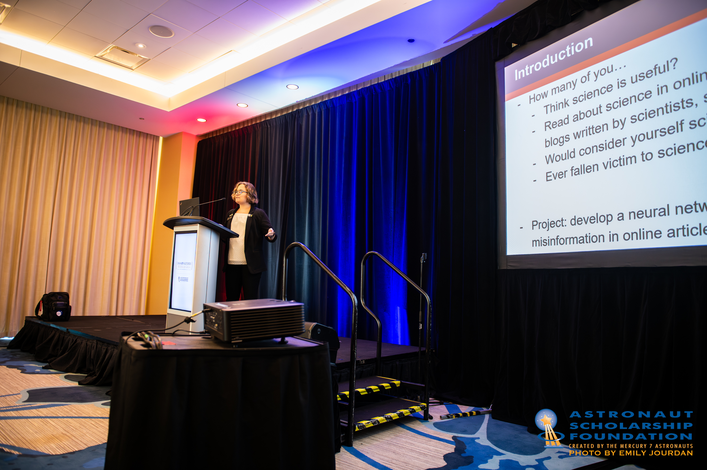

About Me

Education: I recently completed my Bachelors of Science in Astronomy and my Bachelors of Science in Physics at the University of Arizona, with Honors in Astronomy.
Research Interests: My two main research interests are exoplanets and astronomy education/science literacy.
Publications: ADS link here and Google Scholar link here!
Research

Characterizing Post-Habitable Exoplanets with Habitable Worlds Observatory
The under-development Habitable Worlds Observatory (HWO) mission aims to directly image exoplanets. My project involved developing atmospheric retrieval models to see what sorts of spectral data we would need from this mission to determine if an imaged planet is a Venus-like exoplanet. I am currently writing a paper on this work for publication in the Research Notes of the American Astronomical Society.
Compositional Links Between Rocky Exoplanets and their Host Stars
In the Summer of 2022, I did research through a National Science Foundation Research Experience for Undergraduates at the University of New Mexico. I calculated iron-to-silicate mass fractions for stars and planets starting from stellar spectra. The trend I found between the compositions was weaker than past trends, and this weaker trend is now confirmed by others.
Analyzing Student Reasoning in Astrobiology MOOC Writing
This was my Honors Thesis in Astronomy, earning me Honors from the W.A. Franke Honors College at the University of Arizona. I compared student writing assignments with experts to determine what reasoning students tended to use. I am currently working on rewriting this thesis for publication in the journal Astrobiology.
Combating Science Misinformation Online
This project was partially funded by a NASA Space Grant in 2021-2022. I read hundreds of articles from ten pseudoscience topics, classifying them as real or fake science and looking for claim-evidence pairs within these articles. This project is now being extended to use Large Language Models to determine whether an article is real or fake science, as well as what topic it is part of.
Scalable Grading of Student Writing in MOOCs
Within Massive Open Online Courses, grading assignments is hard to scale, and is currently done by peers. Peer grading is unreliable when compared to instructor grading, however. This project took responses from our MOOC writing assignments and compared the grades the assignments received from instructors, peers, and Large Language Models. A paper on this work has been submitted to the International Journal of Artificial Intelligence in Education. We are now expanding this work to compare the feedback instructors, peers, and LLMs give on student responses.
All papers, as well as selected posters and presentations, are linked in my CV!
Outreach
Teaching: I am excited to begin as a teaching assistant at the University of New Mexico in the fall of 2024.
Outreach: While at the University of Arizona, I worked as a Planetarium Operator and Science Center Interpreter at the Flandrau Science Center and Planetarium, the only planetarium in Southern Arizona. I also volunteered as a NASA Partner Eclipse Ambassador to increase awareness for the October 2023 and April 2024 solar eclipses.
Equity & Inclusion: For my final two years at the University of Arizona, I was a peer leader for the TIMESTEP program, sitting on panels to share my experiences and promote diversity and inclusion in astrophysics.
Contact
Email: sstamer@unm.edu